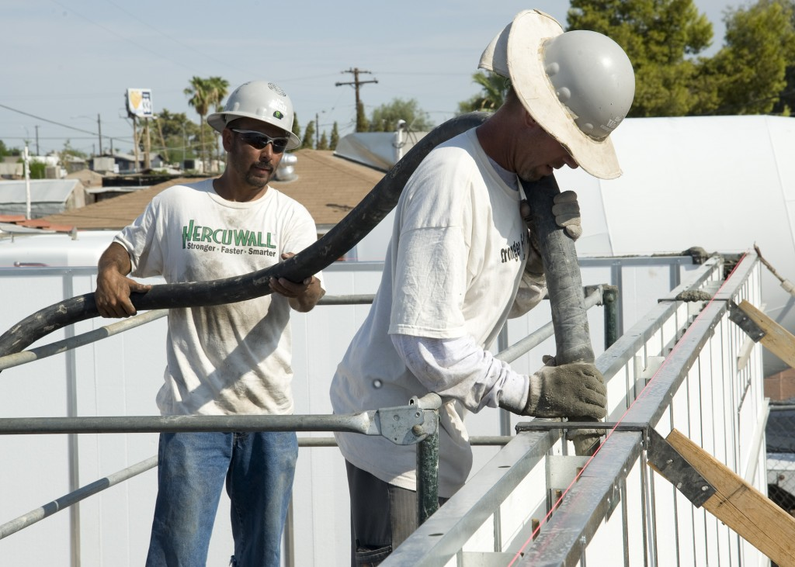
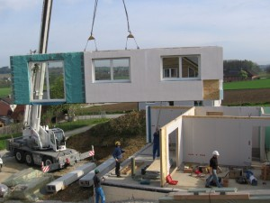

Build Systems out of Poured Concrete, not Bricks
Personally, I don’t have any kind of battle-hardened wisdom. Most of what I know comes from the wisdom of others. In particular I would like to acknowledge the real geniuses up front:
-
My First Petabyte: Now What? (Jacob Farmer from Cambridge Computer)
-
Google Platforms Rant (Steve Yegge of Google)
-
http://perspectives.mvdirona.com/ (James Hamilton of Amazon)
-
Tons of blogs posts, LISA talks, that I can’t site specifically.
-
Seriously, we are all a product of the RSS feeds we read?
I’m not saying IT is dead. But IT is changing.
Look at how building houses has changed over time: 
{kind=link}
{kind=link}
{kind=link}
{kind=link}
-
Brick - small pieces, one at a time
-
Cinder Block - Big pieces, one at a time
-
Poured Concrete - continuous pieces, poured continuously
-
Prefab Houses - one house at a time?
I don’t have book to sell, I have a job to do. That job it to help build systems, and I will not be doing it one at a time.
You might think that I’m talking about “The Cloud”. Well, I don’t know what you are talking about. You might think I’m talking about things like Amazon’s EC2. While that is part of the puzzle, Amazon is just making it easier for us to rent bricks from them. Amazon DynamoDB however is more like poured concrete…
In the end, there is so much work to be done on internal stuff. Like it or not, lots and lots of computing just can’t be run on public infrastructure. (Utility Computing?) For that, we need private infrastructure. A “Private Cloud” you might say? Yes, but that is only the beginning of the story. It is certainly a good start: get really good a supplying bricks. (Or prefab houses)
The rest of the infrastructure story (I believe) has to do with simplifying and unifying our bricks, or concrete. It is not enough to be able to spin up VM’s on demand. A big scalable SAN is not enough. Who cares how fast you can provision, what is it that you are provisioning?
Here is what we need to make it happen:
1. Blur the lines of Storage / Compute / Networking
You system engineers should be configuring your networking. Your network should be configuring itself. The Storage should not just be salable, but agile and dynamic. The data should migrate to where it can be served the most efficiently. IaaS can enable this to happen as the apps are abstracted from the hardware. Imagine a setup where every server node has internal SSDs and an agile filesystem automatically moves the most requested objects to its local storage (for the lowest latency).
2. Devops
Destroy the Silos! There should be no difference between development and ops. Make your developers keep their apps running. This gives them an incentive to build them better. The trick is of course to have the infrastructure in place for them to use. Imagine a place where Developers own the end-to-end lifecycle of their application.
3. Forward thinking business-people
“IT” provides a huge competitive advantage for business, even more than it has in the past. There is no industry where IT is not a critical business component. Evolving IT helps lift up everything. Imagine a world where the CTO can see the vision and imagine how cutting edge infrastructure provides real value to the business.
4. Apps that assume they are distributed
We can’t keep building our systems with single points of failure, whether they are in a “cloud” or not. Think about the pain of going from one MySQL server to two. How about the three? It is too hard. We need a more Mongodb-like approach. Imagine a world where every app can be “poured” to one node or a hundred nodes.
5. Design Apps to use Objects instead of Files
The S3 approach is good. We need to learn from this. Web-apps are not the only things that can benefit from the transition from file to objects. HTTP based object stores are much easier to scale and can keep a higher availability than traditional filesystems. Imagine a world where applications can take advantage of distributed object stores as easily as they can use local filesystems.
Those are my predictions for the future. I’m excited to be a part of it!
Comment via email